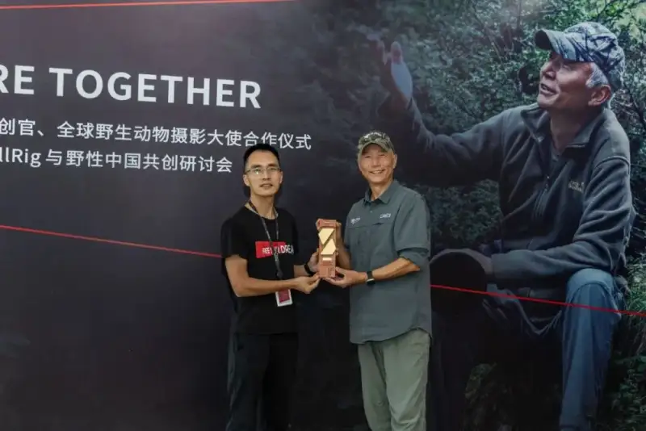
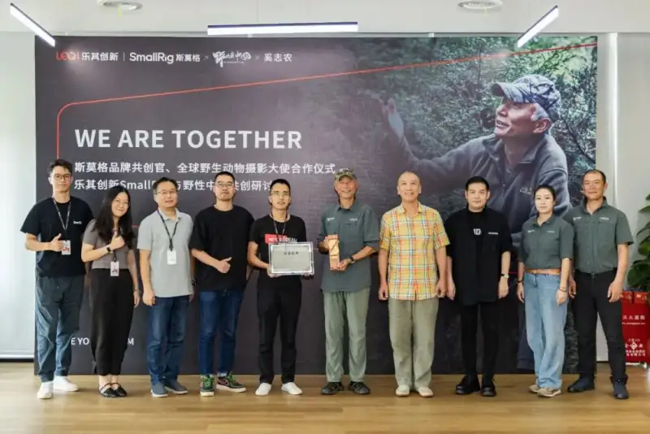

Recently, the cooperation ceremony and co-creation seminar between Xi Zhinong, the world-famous wildlife photographer and founder of the Wild China studio, and Leqi Innovation SmallRig was held in Shenzhen. At the meeting, Xi Zhinong formally accepted the invitation from Leqi Innovation SmallRig to become thethe co-creation officer of the SmallRig brand and a global ambassador for wildlife photography.Xi Zhinong and the Wild China team he leads will work with Leqi Innovation SmallRig in deep co-creation across image creation, product R&D, and conservation.

Zhou Yang, founder and CEO of Leqi Innovation SmallRig, presented a certificate and commemorative medal to Xi Zhinong
Xi Zhinong is a world-famous wildlife photographer and founder of the Wild China studio. He is known worldwide for his outstanding photography and deep care for conservation. For 40 years he has used his lens to record the precious images of many endangered wild animals. He has long worked on the front line of wildlife conservation, and he founded the Wild China studio and the Cangshan Natural Image Museum.
As a world-famous wildlife photography master, Xi Zhinong won the BBC Wildlife Photographer of the Year in 2001. In 2022 he became the only Chinese winner of the National Geographic Society Wayfinder award, and Outdoor Photography magazine named him one of the 40 most influential nature photographers in the world. He is also the first Chinese photographer to win in the Wildlife Photographer of the Year, and the only Chinese photographer in the International League of Conservation Photographers (ILCP). His documentaries, such as In Search of the Yunnan Snub-Nosed Monkey and The Mysterious Monkey of Shangri-La, are famous at home and abroad. They have won the recognition of many awards at home and abroad, and they have stirred wide public attention and thought on wildlife conservation. In 2023, Snow Leopard and Her Friends, directed by Xi Zhinong, won the Golden Rooster Award for best documentary or science film.
Leqi Innovation SmallRig was founded in 2010. It is a global maker of product ecosystems for imaging scenes. Its core brand, SmallRig, uses a unique global user co-creation model and an agile supply chain of small batches, many categories, frequent turnover, and semi-custom quick manufacturing. Starting from camera support products, it has built the most complete scenario product ecosystem in the imaging industry, covering four product lines (camera support and stabilization, smartphone support and stabilization, lighting and control systems, and imaging power) and one-stop livestream solutions, with over 720 items. To date, SmallRig products are sold in over 160 countries and regions, with more than 10 million users worldwide, and they lead globally in sales and market share.

At the ceremony, Zhou Yang, founder and CEO of Leqi Innovation SmallRig, said that Xi Zhinong's professional spirit, innovative thinking, and pure care for nature will bring broad cooperation and development room to both sides. He looks forward to both sides working together to give global image creators better and more professional support and service, while actively meeting social responsibility and contributing to conservation and sustainable development.
About this cooperation, a person in charge at Leqi Innovation SmallRig said that Xi Zhinong and his Wild China team have rich field shooting experience and a deep understanding of nature. They believe this cooperation will give SmallRig more inspiration and direction for image creation and product innovation.